prova numerabilità di Q
come prima cosa si crea una tabella che contiene tutti i numeri razionali, a quel punto si collega ogni numero naturale a un numero razionale

Settembre 2021
Insegnante: Marco Maghetti
marco.maghetti@unibi.it
22 dicembre 9:30/10:00
ci sono quattro sessioni ed ogni sessione ha un gruppo d’appelli (esistono sessioni estive, autunnali e invernali).
il primo analisi ci sarà in giugno 2022.
numeri naturiali : \(N =\{1,2,3,4...\}\)
numeri interi : i numeri interi hanno la proprietà di avere l’opposto, \(Z =\{..-2,-1,0,1,2,...\}\)
numeri razionali : ogni unmero ha l’opposto e l’inverso, \(Q =\{\frac{p}{q} | p \in N, q \in Z, p \neq 0 \}\) (notazionione quasi equivalente \(Q = \{ \frac{n}{m} | n \in N, m \in Z \backslash \{0\}, MCD(n,|m|)=1\}\))
numeri reali : \(R\)
| symbolo | spiegazione |
|---|---|
| \(\in\) | Indica che un elemento appartiene ad un insieme |
| \(\notin\) | non appartiene |
| \(\forall\) | per tutti gli elementi di un insieme |
| \(:\) oppure | | tale che |
| \(\exists\) | Esiste almeno un elemento |
| \(\nexists\) | Non esiste neanche un elemento |
| \(\exists!\) | Esiste un solo elemento |
| \(\subseteq\) | \(A \subseteq B\) indica che A è un sottoinsieme o uguale a B |
| \(\nsubseteq\) | \(A \nsubseteq B\) c’è almeno un elemento in A che non è in B |
| \(\cup\) | unione tra due iniemi |
| \(\cap\) | crea un insieme con gli elementi comuni dei due insiemi |
| \(\emptyset\) | insieme vuoto (è un subset di tutti gli insiemi) |
| \(\backslash\) | differenza tra insiemi (non è commutativa} |
| \(\upsilon\) | inisme universo è un insieme definito per fare il complementare |
| \(C(A)\) | diffrerenza tra un insieme universo e l’insieme A (complementare) |
| \(\wedge\) | E logioco (and) |
| \(\vee\) | O logioco (or) |
| \(\implies\) | è il simbolo di implicazione logica |
| \(\bar{p}\) | è la negazione della preposizione p |
| \(\displaystyle \sum_{i=0}^n a_i= a_0 + a_1 + a_2+ ... +a_n\) | sommatoria |
un insieme è definito dai suoi elementi, e non dal loro ordine
TODO: da finire di aggiungere le operazioni e scrivere la loro definizione
Unione Insiemi: crea un insieme contenente tutti gli elementi di a A e B A,B sono insiemi
\(A \cup B = \{x | x \in A \vee x \in B \}\)
Intersezione Insiemi: crea un insieme contenente tutti gli elementi comuni a A e B A,B sono insiemi
\(A \cap B = \{x | x \in A \wedge x \in B \}\)
Sottrazione tra Insiemi: Dati due insiemi A e B crea un insieme che contiene tutti gli elementi di A che non appartengono in B
\(A \backslash B =\{x| x \in A \wedge x \notin B \}\)
Moltiplicazione Insiemi(prodotto cartesiano): associa ogni elemento dell’insieme A tutti gli elementi dell’insieme B creando delle coppie ordinate A,B sono insiemi
\(A\) x \(B\) = \(\{ (a,b) | a \in A \wedge b \in B\}\)
\(A\) x \(B \neq B\) x \(A\)
p = proposizione (è un affermazione che può essere o vera o falsa)
\(\bar{p}\) = “non p”, è la negazione di p
esempi
\(p \implies q\) = “p implica q” (p si chiama ipotesi e q si chiama tesi)
Si può leggere “p condizione sufficente per q” oppure “q condizione necessaria per p”.
tabella di verità e equivalenza
| p | q | \(p \implies q\) |
|---|---|---|
| V | V | V |
| V | F | F |
| F | V | V |
| F | F | V |
\(p \iff q\) = “p implica q”
significa che \((p \implies q) \wedge( q \implies q)\)
tabella di verità
| p | q | \(p \iff q\) |
|---|---|---|
| V | V | V |
| V | F | F |
| F | V | F |
| F | F | V |
\(f: A \rightarrow B\) \(x \xrightarrow{\space f\space} f(x)\):
due funzioni sono uguali se e solo se il dominio il codominio e la legge di associazione sono uguali:f è la legge d’associazione che associa un elemento nell’insieme A in un insieme B (la funzione è definita dal: dominio,codominio e legge di associazione (\(A,B,f\)))
\(\forall x \in A, \exists! b \in B : f(x) = b\)
prioprietà iniettiva (1-1): tutti gli elementi del codominio sono associati a un elemento del codominio diverso \(f: A \rightarrow B\) se \(\forall a \in A,\forall a' \in A : a\neq a' \implies f(a) \neq f(a')\)
l’inniettività dipenda dal dominio
esempio
\(f(n)=n^2\) non è (1-1) perchè \(f(-1)=1=f(1)\)
ma la si può far diventare mettendo come dominio R+
surrettiva (su) ogni elemento del codominio deve avere un elemento del dominio per cui f(a)=b \(\forall b \in B, \exists a \in A : f(a)=b\)
la surrettività dipenda dal codominio
esempio
\(f: A \rightarrow B\)
\(f(n)=n^2\) non è (su) perché \(\forall b \in B, \nexists a \in A : f(a)=b\)
ma la si può far diventare mettendo come codominio R+
Una funzione sia surrettiva che invettiva è detta biunivoca e quindi è invertibile
\(f: A \rightarrow B\) è invertibile \(f^{-1}: A \rightarrow B\) e vuol dire che:
\(f\) è ivertibile \(\leftrightarrow f\) è biunivoca
l’immagine di una funzione sono tutti gli elementi di b che sono associati con a
\(\text{Img} f = \{ b \in B | \exists a \in A : f(a)=b \}\)
\(\text{Img} f \subseteq B\)
perchè vengono estesi i numeri razionali a quelli reali
la cardinalità di un insieme è il numero di elementi di un insieme
due insiemi sono equipotenti solo se i due insiemi hanno la stessa cardinaltà.
Si può dimostrare due insiemi sono equipotenti se c’è una corrispondenza biunivoca (molto utile con gli insiemi infiniti).
\(\mathbb{N}\) e \(\mathbb{Z}\) sono inifiniti \(\mathbb{N} \subsetneqq \mathbb{Z}\)
\(\mathbb{N}\) e \(\mathbb{Z}\) sono equipotenti
per dimostrare che \(\mathbb{N}\) e \(\mathbb{Z}\) sono equipotenti creaiamo una funzione biunivoca tra i due
\(f(n)= \begin{cases} n/2 & \text{se n è pari} \\ -\frac{n+1}{2} & \text{se n è pari} \end{cases}\)
un insieme è numberabile se esiste una funzione \(f : N \rightarrow A\) è biunivoca
lemma: è un piccolo teorema
(Lemma) A è numerabile se è solo se \(f_1 : A \rightarrow \mathbb{N}\) è surrettiva
\(f_2 : \mathbb{N} \rightarrow A\) è surrettiva
si può provare che l’insieme dei numeri razionali è numerabile
prova numerabilità di Q
come prima cosa si crea una tabella che contiene tutti i numeri razionali, a quel punto si collega ogni numero naturale a un numero razionale
\(I \subset \mathbb{R}\)
data una funzione \(f: A \rightarrow \mathbb{R}\)
\(f(x)=f(-x) \forall x \in A\) la funzione è pari
\(-f(x)=f(-x) \forall x \in A\) la funzione si dice dispari
esempio
\(y=x^2\) è una funzione pari
TODO: aggiungere il grafico
\(y=x^3\) è una funzione dispari
TODO: aggiungerei l ficopermutazioni: contano l’ordine degli elementi
combinazioni: contano il numero di set diversi
\(n!= 1*2*3*4*5*...*(n-1)*n, n\in \mathbb{N}\) , \(0!=1\)
il fattoriale si usa per contare le permutazioni di una lista di elementi diversi.
\(n \in \mathbb{N}, m \in \mathbb{N}\)
\(\binom{n}{m} = \frac{n!}{m!(n - m)!} = {}^{n}C_{m} = C_{n}^m\)
il binomiale si usa per contare quanti sottoinsiemi partendo di m elementi posso formare partendo da un insieme di n(non contano gli ordini,combinazioni).
Proprietà:
Prova coefficiente binomiale


Come si calcola il binomio \((a+b)^n=?\)
TODO: spiegare con parole tue come si calcola il coefficiente di ogni binomio
Formula del binomio di newton
\((a+b)^n=\displaystyle \sum^{n}_{k=0} \binom{n}{k} a^{n-k}*b^k\)
dipende dall’assioma che dice che gli angoli del triangolo rettangolo misurano 180°

\(Area(ABCD)=(a+b)^2\)
\(Area(EFGH)=c^2\)
\(Area(ABCD)-Area(EFGH)=4*\frac{ab}{2}\)
\((a+b)^2-c^2=4\frac{ab}{2}\) \(a^2+b^2+2ab-c^2=2ab\) \(a^2+b^2-c^2=0\) \(a^2+b^2=c^2\)
Quanti sono i nueri primi?
Dimostrazione per assurdo, supponiamo che i numueri primi siano finiti, possiamo elencarli in ordine crescente:
\(1<p_1<p_2<p_3<...<p_n\)
Creiamo un numero \(m {:=} p_1\times p_2 \times ... \times p_n +1\), essendo che m è più grande di tutti i numeri primi in particolare più grande di \(p_n\) non dovrebbe essere un numero primo, quindi può essere diviso da un numero primo.
Se \(m\) fosse divisibile per \(p_1\) allora \(\exists m_1 \in \mathbb{N}: m_1 \times p_1=m=p_1\times p_2 \times ... \times p_n +1\)
\(m_1\times p_1 -( p_1\times p_2 \times ... \times p_n )=1\)
\(p_1 (m_1 - p_2 \times ... \times p_n )=1\)
\(p_1 (m_1 - p_1\times p_2 \times ... \times p_n )=1\)
quindi: \(p_1 =1\)
essendo che \(m\) non è divisibile per nessuno primo, \(m\) è primo.
\(\mathbb{R}\) possiede la proprità di continuità (che manca a \(\mathbb{Q}\)) i numeri razionali sono quanti sono i punti della retta? quindi possiamo trovare una funzione biunivoca tra i \(\mathbb{Q}\) e i punti sulla retta?.
Prendiamo il punto \(\sqrt{2}\) che è sulla retta, non è rappresentabile con i numeri razionali
Dimostrazione per assurdo
Assumiamo \(\sqrt{2} \in \mathbb{Q}\) Quindi:
\(\exists m,n \in \mathbb{N} | \sqrt{2} = \frac{m}{n}\)
Supponiamo che la frazione sia ridotta ai minimi termini: \(MCD(m,n)=1\)
\(\sqrt{2} = \frac{m}{n}\)
\(2 = \frac{m^2}{n^2}\)
\(2n^2 = m^2\)
allora \(m^2\) è pari quindi \(\exists m_1 \in \mathbb{N}: m=2m_1\)
\(2n^2 = (2m_1)^2\)
\(n^2 = 2(m_1)^2\)
Sia \(n \in \mathbb{N}\): \(n\) non è un quadrato perfetto allora \(\sqrt{n} \notin \mathbb{Q}\)
dimostrazione
Lemma: \(m,n,l \in \mathbb{N}\) tali che \(MCD(l,m)=1\) allora se \(l | m \times n \implies l | n\)
supponiamo che \(\sqrt{n} \in \mathbb{Q} \implies \exists p,q \in N: \sqrt{n}=\frac{p}{q}\) dove \(MCD(p,q)=1\)
\(n=\frac{p^2}{q^2}\)
\(nq^2=p^2\)
essendo che p e q sono primi tra loro allora \(p^2\) divide \(q^2n\) e quindi dall’lemma \(p^2\) divide \(n\)
quindi \(\exists v \in \mathbb{N}: n = p^2v\)
allora riscriviamo \(q^2p^2v=p^2\) allora \(q^2v=1\)
Essendo \(q^2 , v \in \mathbb{N}\) allora \(v=1\)
allora \(n=p^2\) n è un quadrato perfetto
\([a,b]=\{x \in \mathbb{R} | a \leq n\leq b\}\)
\(]a,b[=\{x \in \mathbb{R} | a < n < b\}\)
\([a, \infty [=\{x \in \mathbb{R} | a \le n\}\)
Insieme Limitato superiormente
\(M \in \mathbb{R}\) si dice maggiorante di A se: \(\forall a \in A\): \(a \leq M\) se A ammette un maggiorante si dice superiormente limitata
L’insieme dei Maggioranti \(M_g(A)=\{x\in R|\forall a \in A, x \geq a\}\)
Insieme Limitato inferiormente
\(\mathbb{m} \in \mathbb{R}\) si dice minorante di A se: \(\forall a \in A\): \(\mathbb{m} \leq a\) se A ammette un minorante A si dice inferiormente limitato
L’insieme dei Minoranti \(M_n(A)=\{x\in R|\forall a \in A, x \leq a\}\)
Insieme Limitato
se A ammette sia un minorante che un maggiorante è limitato
minimo di un insieme:
\(\forall a \in A : b \leq a\) (b è i minimo ) se b è il minimo di A è il più grande dei minoranti
massimo di un insieme:
\(\forall a \in A : a \leq b\) (b è il massimo) se un b è il massimo di A, è il più grande dei maggioranti
se A è superiormente limitato ha il minimo dei maggioranti \(\sup A\) (\(\sup A\) si chiama estremo superiore di A ), se B non è superiormente limitato \(\sup B= +\infty\)
se A è inferiormente limitato ha il massimo dei minorandi \(\inf A\) (\(\inf A\) si chiama estremo inferiore di A) , se B non è inferiormente limitato \(\inf B= +\infty\)
Q a differenza di R non ha sempre la proprietà di avere un massimando e un minorando es. \(\{q \in \mathbb{Q}| q \le \sqrt{2}\}\)

L’intervallo \(A = ]3,4]\) :
N, Z e Q hanno la stessa cardinalità mentre R ha una cardinalità maggiore \(|\mathbb{N}|<|\mathbb{R}|\).
Dimostrazione per Assurdo
Supponiamo che esista una funzione:\(f:\mathbb{N} \implies [0,1[\) definiamo la funzione come:

allora possiamo crere un numero reale \(a \in [0,1[\) tale che \(f(n)\neq a \forall n \in \mathbb{N}\)
costruiamo a usando un procedimento diagolnale
\(r_j=\begin{cases}5 & \text{se } b_{jj}\neq 5 \\ 6 & \text{se } b_{jj}=5\end{cases}\)

\(\forall a \in \mathbb{R_{+}}, \forall n \in \mathbb{N} /\ \{0\} : \exists! b \in \mathbb{R_{+}} : b^n=a\)
Abuso di notazione:b si dice radice artimetica n-esima di a e si scrive \(\sqrt[n]{a}{:=} b\).
Oss: la radice aritmetica è un numero \(\ge 0\) quindi \(\sqrt{4}=2\)
Lemma:
\(\forall n,y \in \mathbb{R}: x,y \ge 0\) si ha:
le prime tre non valgono solo con x e y alla seconda ma quando condividono qualsiasi stesso esponente.
dimostrazione ### Teorema di esistenza di \(\sqrt{}\)
cosiderando l’insieme \(A = \{c \in \mathbb{R} | c \ge 0 , c^2 \le a\}\)
TODO:da completare
\(a \in R\)
\(|a| {:=} max\{a,-a\}\)
Una Successione di Numeri: è una funzione \(\displaylines{f: \mathbb{N} \to \mathbb{R} \\ n \to f(n) = a_n}\) \(f(0)=a_0\) primo elemento
\(f(1)=a_1\) secondo elmento
\(f(2)=a_2\) terzo elemento
… \((a_n)_{n \in \mathbb{N}}, (a_n)_n\)
Non tutte le succeessioni hanno lo zero nel dominio: \(\mathbb{N} /\ \{0\} = \mathbb{N^*}\)
Esempi:
Anche le successioni posono essere limitate superiormente o inferiormente o entrabmbi.
es
\(a_n =\frac{n}{n+1} \to 1\)
\(\displaylines{(a_n)_n , L \in \mathbb{R} \mbox{, si dice che ,} \displaystyle \lim_{n \rightarrow +\infty} a_n = L \mbox{, se } \\ \forall \varepsilon >0, \exists \bar{n}=\bar{n}(\varepsilon) \in \mathbb{N}: \forall n \ge \bar{n} : \\ |a_n -L | < \varepsilon \\ (L - \varepsilon < a_n < L + \varepsilon) \\ (a_n)_n \text{ si dice convergente}}\)
Esercizio Limite finito
fissando un \(\varepsilon >0\) arbitrario, posso trovare un \(\bar{n}\) in modo che : \(\displaylines{\forall n \le \bar{n} \\ |\frac{n-1}{n}-1| < \varepsilon}\) ?
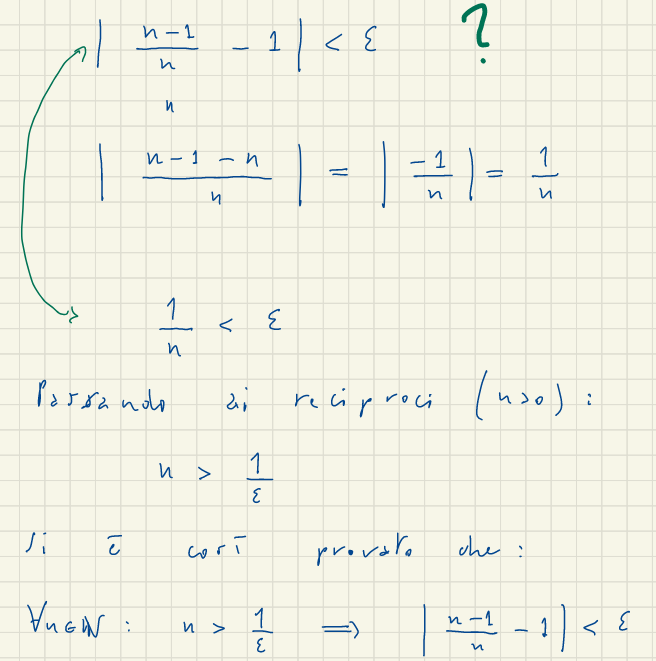 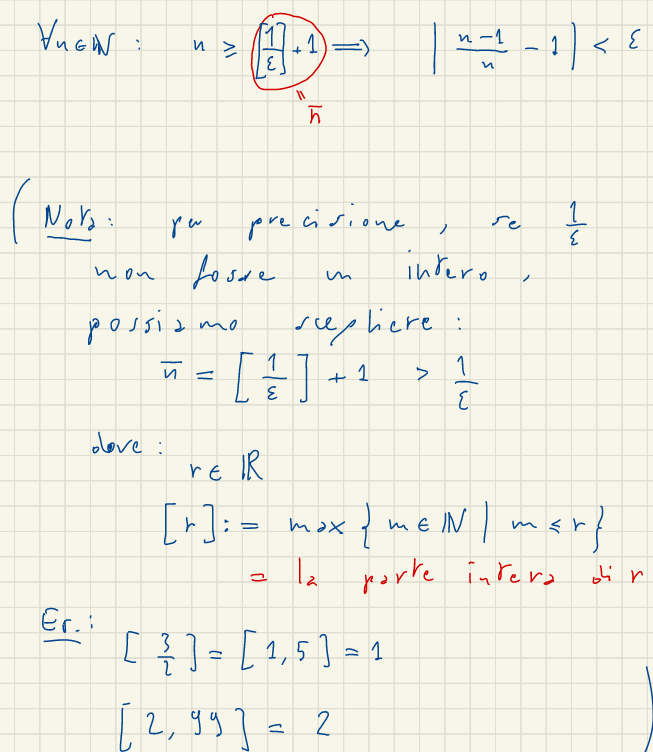Si dice che \(\displaystyle \lim_{n \rightarrow \infty} a_n=+\infty\) se:
\(\displaylines{\forall k > 0,\exists \bar{n}=\bar{n}(k) \in \mathbb{N} : \\ \forall n \ge \bar{n} : a_n \ge k}\)
Si dice che \(\displaystyle \lim_{n \rightarrow \infty} a_n=-\infty\) se :
\(\displaylines{\forall k > 0,\exists \bar{n}=\bar{n}(k) \in \mathbb{N} : \\ \forall n \ge \bar{n} : a_n \le -k}\)
in questi casi la successione si dice divergente
Oss: ci sono successioni che non hanno limitie
es
\(a_n= (-1)^n\) la successione è limitata ma non si avvicina a nessun numero in quanto oscilla
\(a_n= (-1)^n\times n\) oscilla e quindi non ha limiteTeorema (Algebra dei limiti)
siano \((a_n)_m\),\((b_n)_m\) successioni tali che, \(a_n \rightarrow l_1\) ,\(b_n \rightarrow l_1\) dove \(l_1,l_2 \in \mathbb{R} \cup \{\infty \} \cup \{\infty\}\)
\[a_n+b_n \rightarrow \begin{cases} l_1+l_2 &\text{se } l_1,l_2 \in \mathbb{R} \\ \infty &\text{se } l_1=+\infty,l_2 \in \mathbb{R}\cup\{+\infty\} \\ -\infty &\text{se } l_1=-\infty,l_2 \in \mathbb{R}\cup\{-\infty\} \\ \end{cases}\]
Forme Indeterminate \(+\infty-\infty\)
\[a_n \times b_n \rightarrow \begin{cases} l_1\times l_2 &\text{se } l_1,l_2 \in \mathbb{R} \\ +\infty &\text{se } l_1=+\infty,l_2 \in (\mathbb{R}^+\cup\{+\infty\})\backslash \{0\} \\ +\infty &\text{se } l_1=-\infty,l_2 \in (\mathbb{R}^-\cup\{-\infty\})\backslash \{0\} \\ -\infty &\text{se } l_1=+\infty,l_2 \in (\mathbb{R}^-\cup\{-\infty\})\backslash \{0\} \\ -\infty &\text{se } l_1=-\infty,l_2 \in (\mathbb{R}^+\cup\{+\infty\})\backslash \{0\} \\ \end{cases}\]
Forme Indeterminate \(0\times (\pm \infty)\)
\[\frac{a_n}{b_n} \rightarrow \begin{cases} \frac{l_1}{l_2} &\text{se } l_1,l_2 \in \mathbb{R} \\ +\infty &\text{se } l_1=+\infty,l_2 \in l_2>0 \\ +\infty &\text{se } l_1=-\infty,l_2 \in l_2<0 \\ -\infty &\text{se } l_1=-\infty,l_2 \in l_2>0 \\ -\infty &\text{se } l_1=+\infty,l_2 \in l_2<0 \\ \end{cases}\]
Forma Ineterminata:\(\frac{\pm \infty}{\pm \infty}\)
\((a_n)_n\) si dice crescente \(\forall n \in \mathbb{N}\): \(a_n < a_{n+1}\) si scrive \((a_n \nearrow)\)
\((b_n)_n\) si dice crescente \(\forall n \in \mathbb{N}\): \(b_n > b_{n+1}\) si scrive \((a_n\searrow)\)
Una successione crescente o descrescente viene chiamata monotona
Una proprietà importante delle successioni monotone è che esse hanno sempre limite, ossia sono sempre convergenti o divergenti.
Teorema: se \((a_n)_n\) è crescente, allora \(\displaystyle \lim_{n \rightarrow +\infty} a_n = sup \{a_n | n \in \mathbb{N}\}\)
se \((a_n)_n\) è descrescente, allora \(\displaystyle \lim_{n \rightarrow + \infty} a_n = inf \{a_n | n \in \mathbb{N}\}\) Dim:
si tratta di provare che:
\(\displaystyle \lim_{n \to +\infty} a_n = sup \{a_n | n \in \mathbb{N}\}\)
dimostrazione
Crollario:
\((a_n)_n\) è crescente e sup limitata allora: \((a_n)_n\) è covergente, cioè \(\exists r \in \mathbb{R}: a_n \to n\)
\((a_n)_n\) è crescente e inf limitata allora: \((a_n)_n\) è covergente, cioè \(\exists r \in \mathbb{R}: a_n \to n\)
\(a_n = (1+\frac{1}{n}^n), n \in \mathbb{N}^{*}\)
\(a_1=2\) \(a_2=(\frac{3}{2})^2=2,25\) \(a_3=(\frac{4}{3})^3=2,370\) \(a_4=(\frac{5}{4})^4=2,4414\)
Teorema
\(\displaystyle \lim_{n \rightarrow \infty} (1+\frac{1}{n}^n), n \in \mathbb{N}^{*}= e\)
definizione di esponenziale:
\(a \in \mathbb{R} , a<0 , a \neq 1\)
\(y=a^x\) oss:è specificato \(a>0\) poichè senza non si ha la funzione inversa
esempio
\(a=-2\)
\((a)^3=-8\) \((a)^{\frac{6}{2}}\sqrt{-2^6}=\sqrt{64}=8\)
non coincidonoNotazione:
\(\exp_a(x){:=} a^n\)
(se si sceglie come base di a della funzione esponenziale il numero \(e\), \(e^x\) l’esponenziale a base naturale (nome per indicare la \(e\)))
\(\exp : \mathbb{R} \rightarrow \mathbb{R}^{*}\)
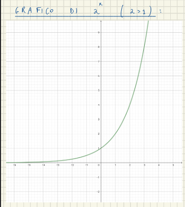 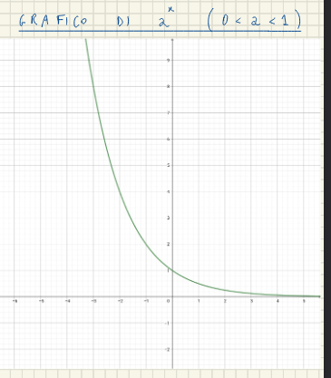
\(a \in \mathbb{R} , a<0 , a \neq 1\)
\(\forall y \in \mathbb{R}: y>0 \exists! x \in \mathbb{R}:\)
\(a^x=y\)
\(\log_a y {:=} x\) (si legge logaritmo di y in base a)
\(\log : \mathbb{R}^{*}_{+} \rightarrow \mathbb{R}\)
esempi
TODO: dimostrare che la funzine è inversa
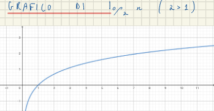
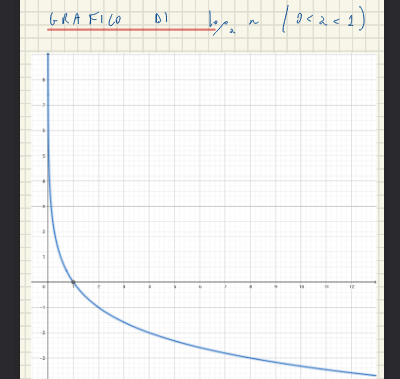
circonferenza gognometrica: circonferenza di raggio uno con il centro sugli assi \(x^2+y^2=1\) (lunghezza \(2\pi\))
TODO: add immagini 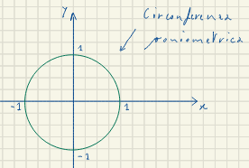
\(\alpha°\): angolo in gradi (non da informazioni sulla lunghezza dell’angolo)
\(\alpha_r\): angolo in gradi
\(\alpha°:360=\alpha_r:2\pi \mbox{ , quindi , } \alpha_r=\frac{\alpha° \times \pi}{360}\)
sia \(P(x_p,y_p)\) un punto sulla circonferenza goniometrica
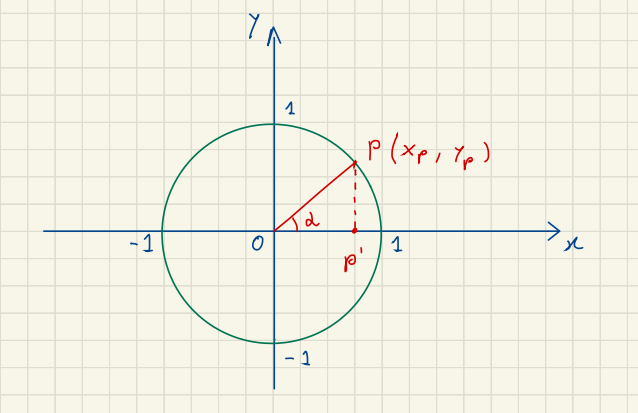
\(\sin \alpha =y_p\)
\(\cos \alpha =x_p\)
Oss: possiamo scrivere \(\sin^2 \alpha +\cos^2\alpha=1\)
\(\sin \alpha =\sin \alpha \times 2\pi n\) dove \(n \in \mathbb{N}\)
si possono ricavare il \(\sin\) dal \(\cos\) e viceversa utilizzando la circonferenza goniometrica
\(\sin \alpha=\mp \sqrt{1-\cos^2 \alpha}\)
Oss:
la funzione \(\sin\) è dispari (\(-\sin(\alpha)=\sin(-\alpha)\))
la funzione \(\cos\) è pari (\(\cos(\alpha)=\cos(-\alpha)\))
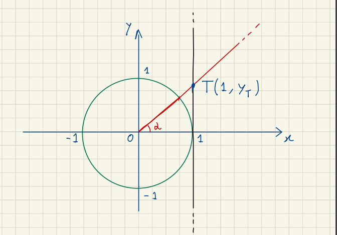
\(\tan \alpha {:=} y_T\) (si legge tangente di \(\alpha\))
si come conseguenza della definizione si ha che :\(\frac{\sin \alpha}{\cos \alpha}\)
la tangente non è definita per:
\(\alpha= \frac{\pi}{4}\) è un angolo speciale perchè crea un triangono isocele. 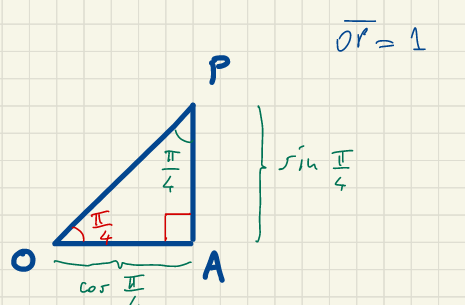
così sappiamo che OA e PA sono uguali e ci basta risolvere \(PO=\sqrt{OA^2+PA^2} \to PO^2=2PA^2 \to 1=2PA^2 \to PA= \frac{1}{ \sqrt{2}}\)
quindi per quest’angolo ha: \(\sin \frac{\pi}{4}=\cos \frac{\pi}{4}=\frac{\sqrt{2}}{2}\) \(tan \frac{\pi}{4}=1\)
\(\alpha= \frac{\pi}{4}\) è un angolo speciale perchè è di 30°. 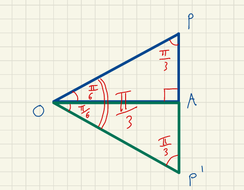
possiamo trasformarlo in questo modo ricavando un triangolo equilatero, e ricaviamo.
\(\cos \frac{\pi}{6}=\frac{\sqrt{3}}{2}\) \(\sin \frac{\pi}{6}=\frac{1}{2}\) \(\tan \frac{\pi}{6}=\frac{\sqrt{3}}{3}\)
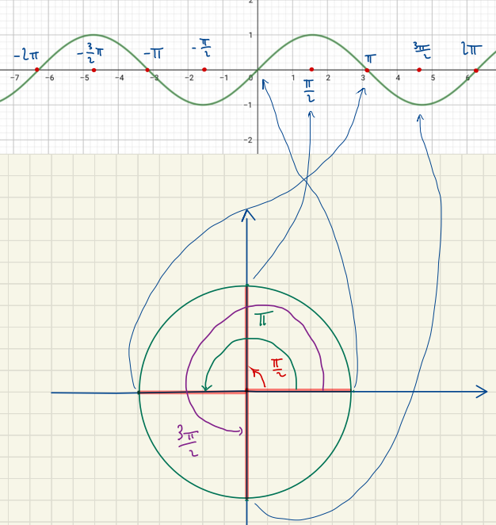 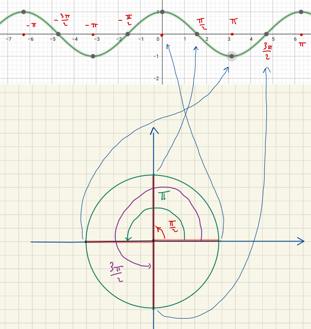 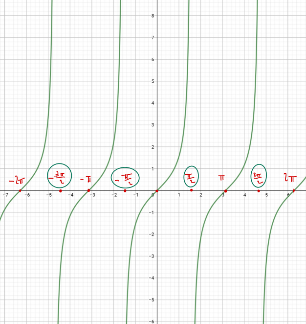
\(\cos(\alpha-\beta)=\cos \alpha \times \cos \beta +\sin \alpha \times \sin \beta\)
\(\cos(\alpha+\beta)=\cos \alpha \times \cos \beta -\sin \alpha \times \sin \beta\)
\(\sin(\alpha-\beta)=\sin \alpha \times \cos \beta -\cos \alpha \times \sin \beta\)
\(\sin(\alpha+\beta)=\sin \alpha \times \cos \beta -\cos \alpha \times \sin \beta\)
\(\cos (\frac{\pi}{2}-\alpha) =\sin \alpha\)
\(\sin (\frac{\pi}{2}-\alpha) =\cos \alpha\)
Dalle formule di addizione si ha: \(\cos 2\alpha=\cos^2 \alpha -\sin^2 \alpha\) ,\(\sin 2\alpha=2\sin \alpha \times \cos \alpha\)
La funzione \(\sin : \mathbb{R}\rightarrow \mathbb{R}\) non è inverstibile perchè non è suriettiva ne iniettiva. Possiamo però restrigere il suo codominio a \(\sin \mathbb{R}\rightarrow [-1,1]\) per farla diventare surrettiva; Similmente renderla iniettiva modifichiamo il suo domninio a \(\sin : [-\frac{\pi}{2},\frac{\pi}{2}]\rightarrow \mathbb{R}\), così possiamo creare il seno biettivo come \(\sin : [-\frac{\pi}{2},\frac{\pi}{2}]\rightarrow [-1,1]\).
La funzione inversa andrà \(\arcsin : [-1,1] \rightarrow [-\frac{\pi}{2},\frac{\pi}{2}]\).
Quindi \(\forall x \in [-\frac{\pi}{2},\frac{\pi}{2}] \\ \arcsin(\sin x)=x\) e quindi \(\forall y \in [-1,1] \\ \sin(\arcsin y)=y\)
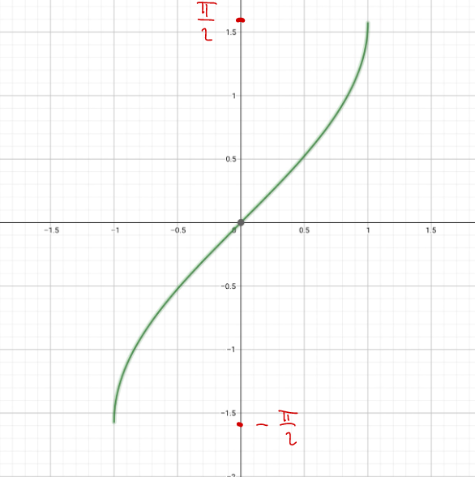
Similmente a come abbiamo visto per seno per creare l’inverso dell coseno dobbiamo renderlo binuivoco. Per renderlo inietiva riduciamo il suo dominio a \([0,\pi]\) e per renderlo surrettivo definiamo il suo codominio \([-\frac{\pi}{2},\frac{\pi}{2}]\)
Quindi \(\forall x \in [-\frac{\pi}{2},\frac{\pi}{2}] \\ \arccos(\cos x)=x\) e quindi \(\forall y \in [0,\pi] \\ \cos(\arccos y)=y\)
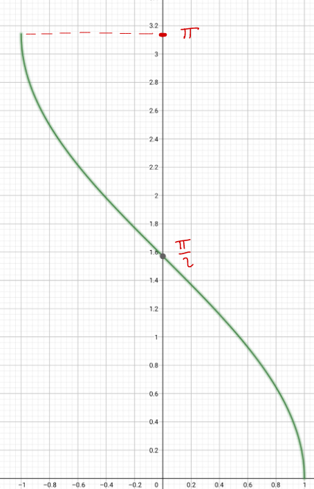
Per renderlo inietiva riduciamo il suo dominio a \([-\frac{\pi}{2},\frac{\pi}{2}]\).
Quindi \(\forall x \in ]-\frac{\pi}{2},\frac{\pi}{2}[ \\ \arccos(\cos x)=x\) e quindi \(\forall y \in \mathbb{R} \\ \cos(\arccos y)=y\)
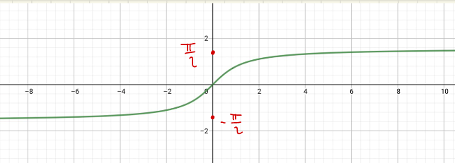
Intorno sferico di un punto \(x_0 \in \mathbb{R}\), e raggio \(r \in \mathbb{R}: r>0\) \(I_r(x_0) = \{x\in \mathbb{R} : |x-x_1|<r\}\) \(I_r=]x_0-r,x_0+r[\)
\(\bar{x}\) è Punto di accumulazione di un insieme A, \(A\subset \mathbb{R}\), \(\bar{x}\in\mathbb{R}\) se:
\(\displaylines{\forall r > 0 : \\ A \cap (I_r(\bar{x})\backslash \{\bar{x}\})\neq \emptyset}\)
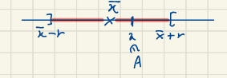
\(D(A)=\{\bar{x}\in \mathbb{R}| \bar{x} \mbox{ è di accomulazione per A}\}\)
Idea:\(\bar{x}\) si dice punto di accumulazione di A se ci si può avvicinare arbitrariamente a \(\bar{x}\), rimanendo in A!
esempio
proposizione:
\(A \subset \mathbb{R}\), \(\bar{x} \in \mathbb{R}\), \(\bar{x}\) è di accumulazione per A se e solo se: \(\exists (a_n)_n \subseteq A \mbox{ t.c.:}\)
\(\displaystyle \lim_{\begin{cases} \mbox{1. }x \to +\infty \\ \mbox{2. }x \to -\infty \\ \mbox{3. }x \to x_0 \\ \mbox{4. }x \to x_0^+ \\ \mbox{5. }x \to x_0^- \end{cases}} f(x)= \begin{cases} \mbox{6. } L \\ \mbox{7. }+\infty \\ \mbox{8. }-\infty \\ \end{cases}\)
\(\forall \varepsilon>0 \exists \delta (x_0,\varepsilon)>0:\forall x \in D(f(x))\begin{cases}\mbox{1. }x >\delta \\ \mbox{2. }x < -\delta \\ \mbox{3. } 0<|x_0-x|<\delta \\ \mbox{4. } x_0<x<x_0+\delta \\ \mbox{5. }x_0-\delta<x<x_0 \end{cases} \implies \begin{cases} |f(x)-L| < \varepsilon \\ f(x)>\varepsilon \\ f(x)<-\varepsilon \end{cases}\)
rappresentazione grafica
\[\displaystyle \lim_{x \rightarrow x_0} L= \begin{cases} \exists \displaystyle{\lim_{x \rightarrow x_0^-}f(x)}, \displaystyle{\lim_{x \rightarrow x_0^+}f(x)}\\ \displaystyle{\lim_{x \rightarrow x_0^-}f(x)}=\displaystyle{\lim_{x \rightarrow x_0^+}f(x)}=L \end{cases}\]
all
Definizione di limite finito
\(f: A \rightarrow \mathbb{R}, x_0 \in D(A)\) si dice che \(\displaystyle \lim_{x \to x_0} f(x)=L\)se: \(\displaylines{\forall \varepsilon > 0\in \mathbb{R}\mbox{ , } \exists \delta = \delta(x_o,\varepsilon)>0: \forall x \in A : \\ 0 < |x-x_0| < \delta \implies |f(x)-L|> \varepsilon}\)
Limite Finito da Destra
\(\displaystyle \lim_{x \rightarrow x_0^+}f(x)=l \iff \displaylines{\forall \varepsilon \in \mathbb{R} , \exists \delta = \delta(x_o,\varepsilon)>0 \\ \forall x \in A : x_0 < x <x_0+ \delta \\ \implies |f(x) -l|< \varepsilon }\)
Limite Finito da sinistra
\(\displaystyle \lim_{x \rightarrow x_0^-}f(x)=l \iff \displaylines{\forall \varepsilon \in \mathbb{R}, \exists \delta = \delta(x_o,\varepsilon)<0 \\ \forall x \in A : x_0-\delta < x <x_0 \\ \implies |f(x) -l|< \varepsilon }\)
limite infinito da destra \(\displaystyle \lim_{x \rightarrow x_0^+}f(x)=+\infty \iff \displaylines{\forall \varepsilon \in \mathbb{R} \exists \delta = \delta(x_o,\varepsilon)<0 \\ \forall x \in A : x_0 < x <x_0+\delta \\ \implies f(x)> \varepsilon }\)
limite infinito da sinistra \(\displaystyle \lim_{x \rightarrow x_0^-}f(x)=+\infty \iff \displaylines{\forall \varepsilon \in \mathbb{R} \exists \delta = \delta(x_o,\varepsilon)<0 \\ \forall x \in A : x_0-\delta < x <x_0 \\ \implies f(x)> \varepsilon }\)
limite all’infinito
\[\lim_{x\to +\infty} f(x) = \begin{cases} l \\ +\infty \\ - \infty \end{cases}\]
\(\displaylines{\forall \varepsilon \in \mathbb{R} >0 , \exists \delta(\varepsilon) > 0 : \forall x \in A : x > \delta \\ \implies \begin{cases} |f(x)-l| < \varepsilon \\ f(x) > \varepsilon \\ f(x)< - \varepsilon \end{cases}}\)
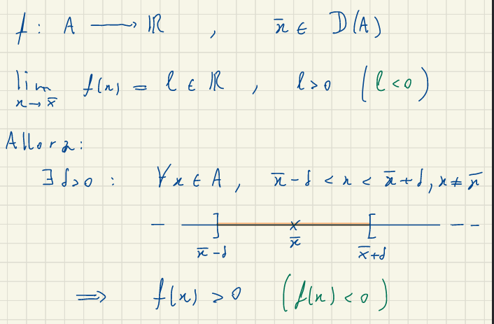
\(f,g,h: A \to \mathbb{R}\)
\(x_0 \in D(A)\)
se: \(\displaystyle \lim_{x \to x_0} g(x) =\displaystyle \lim_{x \to x_0} h(x)= l \in \mathbb{R}\)
\(\exists \delta >0\):
\(\displaystyle \lim_{x \to x_0} g(x) <\displaystyle \lim_{x \to x_0} f(x)<\displaystyle \lim_{x \to x_0} h(x)\)
allora: \(\displaystyle \lim_{x \to x_0} f(x)=L\)
\(\displaystyle \lim_{x \rightarrow 0} \frac{\sin x}{x}=1\)
(pagina 54)[https://virtuale.unibo.it/pluginfile.php/1039220/mod_resource/content/2/21%20Ottobre%202021.pdf]
\(\displaystyle \lim_{x \rightarrow 0} \frac{1-\cos^2 x}{x^2}=\frac{1}{2}\)
\(\displaystyle \lim_{x \rightarrow 0} \frac{1-\cos x}{x}=1\)
\(\displaystyle \lim_{x \rightarrow 0} \frac{a^x-1}{x}=\ln a\) con
\(\displaystyle \lim_{x \rightarrow -1} \frac{3x+2}{2x^2+4x+2}\)
\(\displaystyle \lim_{x \rightarrow \infty} \frac{x^2+x-2}{x^2+3x}\)
soluzione
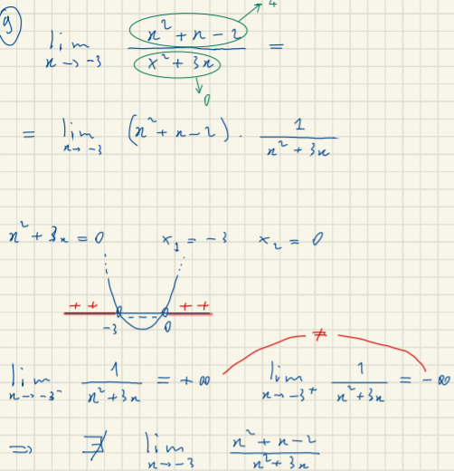
Sia C un cerchio di raggio \(r\), \(S_n\) èpoligono regolare instritto di n lati instritto nel cerchio:
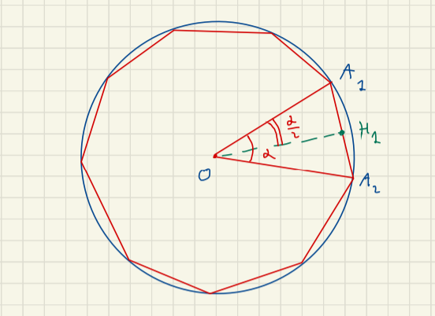 si calcola l’area di questo poligono con il numero di lati che tende ad infinito.
\(A(C)=\displaystyle \lim_{x \rightarrow \infty} A(S_n)\)
dimostrazione
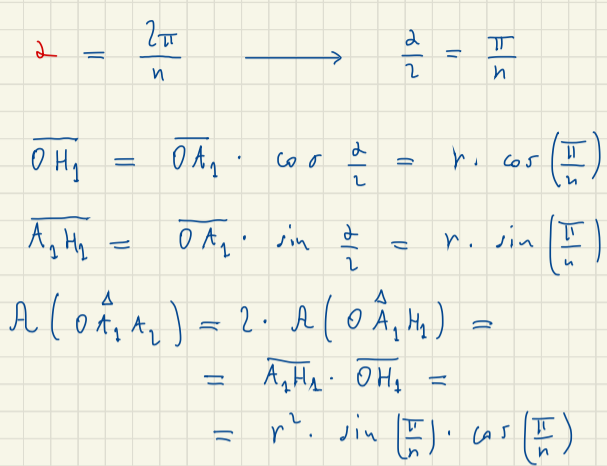 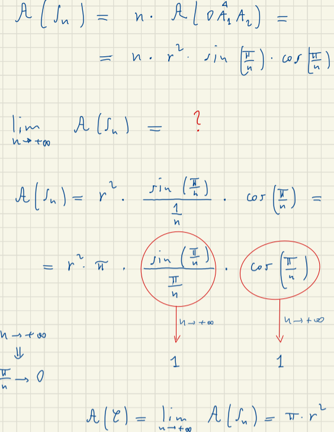
tutte queste funzioni tendono ad infinito, ma non tutte tendono con la stessa forza:
per esempio:
\[\displaylines{f(x) \to +\infty \\ g(x) \to \infty \\ }\] \[\displaylines{ \displaystyle \lim \frac{f(x)}{g(x)}} = \begin{cases} 0 & \mbox{se g(x) cresce più velocemente} \\ +\infty & \mbox{se f(x) cresce più velocemente} \\ \end{cases} \]
punto isolado di un insime \(A \subset \mathbb{R}, x_0 \in A\) se \(x_0\) si deice punto isolato di A se \(x_0 \notin D(A)\) ( \(x_0\) non è un punto di accomulazione)
funzione continua in \(x_0\) \(f:A \to \mathbb{R}\) \(x_0 \in A\)
\(f\) si dice continua in \(x_0\) se:
date f e g due funzioni continue allora:
TODO riguardare la lezione del 28 ottobre
per esempio
\(f(x)=\begin{cases}x^2 & \text{se} & x\neq 0\\ 2 & \text{se } & x=0\end{cases}\)
\(g \circ f= g(f(x))\)
f è continua in \(x_0\), e g è continua in \(f(x_0)\) allora: \(g \circ f: x \to g(f(x))\) è continua in \(x_0\)
Se abbiamo una funzione continua che in un certo punto è negativa e in un altro è positiva sappiamo che la funzione ha al minimo un punto in cui si annulla.

\(f: [a,b] \to \mathbb{R}\) continua \(f(a)\times f(b) <0 \implies \exists c \in ]a,b[: f(c)=0\)
per trovare il punto in cui passa da zero utilizziamo questo algoritmo. \(f(a)<0\) e \(f(b)>0\) costruiamo due successioni \((a_b)_n\), \((b_n)_n\)
prendiamo il punto medio \(\frac{(a+b)}{2}\) possiamo avere tre casi:
Allora le \(a_n\) e \(b_n\) hanno delle proprietà:
Lemma: \((b_n)_n \subset \mathbb{R}\) \(b_n < 0 \forall n (b_n > 0 \forall n)\) \(\displaystyle \lim_{x \rightarrow \infty} b_n= l \in \mathbb{R} \implies l \le 0\)
Vogliamo dimostrare che \(\displaystyle \lim_{x \rightarrow \infty} a_n= \displaystyle \lim_{x \rightarrow \infty} b_n = c \mbox{ e } f(c)=0\)
\(a_n \le a_{n+1} \mbox{ }\forall n \in \mathbb{N}\)
\(b_n \ge b_{n+1} \mbox{ }\forall n \in \mathbb{N}\)
\(\implies (a_n)_n \subset [a,b] \to \mbox{ è limitata } a_n \nearrow \forall n \to \exists \displaystyle \lim_{x \rightarrow \infty} a_n=\alpha \in \mathbb{R}\)
\((b_n)_n \subset [a,b] \to \mbox{ è limitata } a_n \searrow \forall n \to \exists \displaystyle \lim_{x \rightarrow \infty} b_n=\beta \in \mathbb{R}\)
per la proprietà 4:
\(b_n - a_n = \frac{b_1-a_1}{2^{n-1}} \mbox{(tende a} \beta - \alpha\mbox{)}=\frac{b-a}{2^n-1} \mbox{(tende a zero per x)}\)
\(f(a_n) < 0 \forall n \in \mathbb{N}\)
\(\displaystyle \lim_{x \rightarrow \infty} f(a_n)=f(c)\) \(f(c) \le 0\)
TODO: copia pagina 14, 4 novembre

Polinomio di gradi dispari: \(p(n)=\displaystyle \sum^n_{j=0} a_j x^j=a_0+a_1x+...+a_nx^n\)
\(a_n\neq 0\)
Allora:
\(\displaylines{\displaystyle \lim_{x \rightarrow \infty} p(x)=-\infty \implies p(x) <0 \mbox{ se } x \to -\infty \\ \displaystyle \lim_{x \rightarrow \infty} p(x)=+\infty \implies p(x)>0 \mbox{ se } x \to +\infty }\)
TODO: finisch 20
\(f: X \to \mathbb{R}\)
\(f: [a,b] \to \mathbb{R}\) e la funzione è continua
Allora:
\(\exists x_0 \in [a,b]: f(x)\le f(x_0), \forall x \in [a,b]\)
\(\exists x_0 \in [a,b]: f(x)\ge f(x_0), \forall x \in [a,b]\)
e quindi \(\displaylines{f([a,b]) \subset [m,M] \\ m=f(x_1)=\min f([a,b])\\ M=f(x_0)=\max f([a,b])}\)
Se utilizziamo il teorma degli zeri allora:
\(\displaylines{f([a,b]) = [m,M] \\ \exists m=\min f([a,b])\\ M=\max f([a,b])}\)
prova

Il procedimento per cercare una retta tangente per un punto x è fissare un punto e per ogni altro punto vicino creare una finchè non si avvicina al punto P.
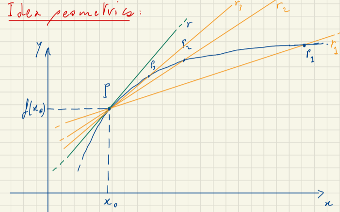
Per individuare il coefficente angolare della retta di una delle rette utilizziamo, \(y=m(x-x_0)+ f(x_0)\), e il coefficente angolare delal retta r lo troviamo facendo \(r_n: y=m_n(x-x_0)+f(x_0) \mbox{ , } m= \displaystyle \lim_{x \to x_0} m_n\)
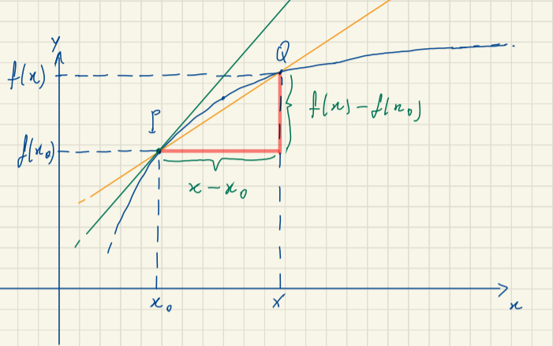
il coefficiente angolare della tangente sarà \(\displaystyle \lim_{x \to x_0} \frac{f(x)-f(x_0)}{x-x_0}\)
\(f: I \to \mathbb{R}\) I intervallo, \(x_0 \in I\),\(f\) si dice derivabile in \(x_0\) se: \(\exists \displaystyle \lim_{x \to x_0} \frac{f(x)-f(x_0)}{x-x_0}\in \mathbb{R}\)
in tal caso, tale limite si chiama derivata di f in x_0, e si scrive:
\(f'(x_0)=\frac{df}{dx}(x_0)=Df(x_0)\)
\(f\) è derivabile solo se la derivata di destra e di sinistra, esistono e sono uguali \(f'_+(x_0)=f'_-(x_0)=f'(x_0)\)(derivata a destra è il limite in \(x_0^+\) e quella di destra è il limite in \(x_0^-\)).
Possiamo riscrivere \(x\) come \(x_0+h\) e trasformare la definizione in \(\displaystyle \lim_{h \to 0} \frac{f(x_0+h)-f(x_0)}{h}\)
Se f è derivabile in \(x_0 \in I\) allora esiste una retta tangente al grafico di \(f\) in \(x=x_0\) ed ha equazione \(r: y=f'(x_0)(x-x_0)+f(x_0)\)
\(f,g:I\to \mathbb{R}, x\in I\) \(f,g\) sono derivabili in \(x_0\), allora:
| funzione | derivata |
|---|---|
| \(f\pm g\) è derivabile in \(x_0\) | \((f \pm g)'(x_0)=f'(x_o) \pm g'(x_0)\) |
| \(f \times g\) è derivabile in \(x_0\) | \((f\times g)'(x_0)=f'(x_0)\times g(x_0)+ f(x_0)\times g'(x_0)\) |
| \(\frac{f}{g}\) è derivabile in \(x_0\) | \((\frac{f}{g})'(x_0)=\frac{f'(x_0)\times g(x_0)-f(x_0)\times g'(x_0)}{(g(x_0))^2}\) |
funzione composta: \(Df(g(x_0))=f'(g(x_0))g'(x_0)\)
Funzioni Goniometriche
Esponenziale \(Da^x=(\ln a)a^x\)
funzione logaritmica: \(D \log_a y= \frac{1}{\ln a }\times \frac{1}{y}\)
Dato I un intevallo \(\subset \mathbb{R}\), \(x_0 \in I\),\(f: I \to \mathbb{R}\) si ha che:
se \(f\) è derivabile in \(x_0 \implies f\) è continua in \(x_0\)
\(f: I \to \mathbb{R}\) derivabile su \(I \implies \exists f':I \to \mathbb{R}\) Se \(f'\) è derivabile in \(x_0 \in I : f''(x_0):= \displaystyle \lim_{h \to 0} \frac{f'(x_0+h)-f'(x_0)}{h} \in \mathbb{R}\)
NOTA
la classe di derivabilità denota la regolarità della funzione
\(f \in C^k (I) \iff \begin{cases}f \mbox{ è derivabile k-volte su }I_j \\ f^k\mbox{ è continua su I}\end{cases}\)
\(x_0 \in A\) si dice punto di massimo relatio (o locale se) \(\exists r>0: f(x)\le f(x_0), \forall x \in A \cap I_r(x_0)\)
\(x_0 \in A\) si dice punto di minimo relatio (o locale se) \(\exists r>0: f(x)\ge f(x_0), \forall x \in A \cap I_r(x_0)\)
\(f:[a,b]\to \mathbb{R}\)
Allora:
\(f'(x_0)=0\)
\(f:[a,b]\to \mathbb{R}\)
Allora:
\(\exists c \in ]a,b[ : f'(c)=0\)
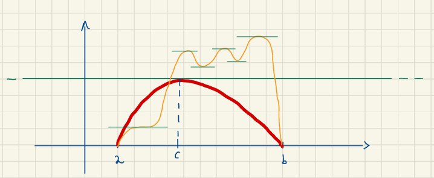
\(f:[a,b]\to \mathbb{R}\)
Allora :
\(\exists c \in ]a,b[ : \frac{f(b)-f(a)}{b-a}=f'(c)\)
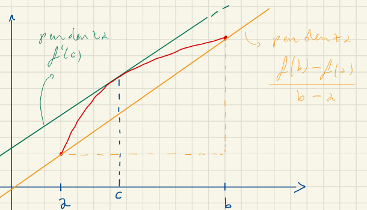
\(f: ]a,b[ \to \mathbb{R}\) \(f\) derivabile t.c. \(f'(x)=0,\space \forall x \in ]a,b[\) Allora f è constante
\(f,g:[a,b] \to \mathbb{R}\)
Allora: \(\exists c \in ]a,b[:\frac{f(b)-f(a)}{g(b)-g(a)}=\frac{f'(c)}{g'(c)}\)
\(f'(x)\ge 0 \mbox{ , }\forall x \in ]a,b[ \iff f\) è crescente su\(]a,b[\)
\(f'(x)> 0 \mbox{ , }\forall x \in ]a,b[ \implies f\) è strettamente crescente su\(]a,b[\) 9 decresente
\(f'(x)\le 0 \mbox{ , }\forall x \in ]a,b[ \iff f\) è decrescente su\(]a,b[\)
\(f'(x)< 0 \mbox{ , }\forall x \in ]a,b[ \implies f\) è strettamente decrescente su\(]a,b[\)
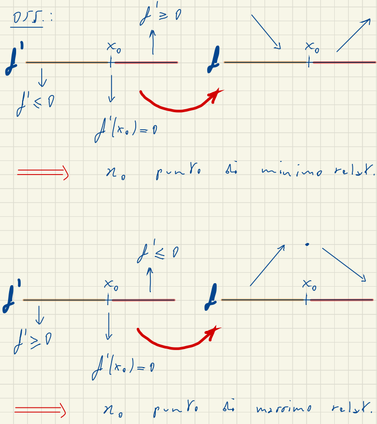
Queste sono le condizioni sufficenti (non necessarie) per il minimo e il massimo
retta nel piano : \(y=mx+q\) (si possono rappresentare tutte le rette tranne quelle veritcali (\(x=k\)))
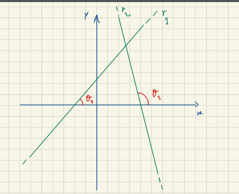
\(r1: y=mx+1 \mbox{ , } m=\tan \alpha_1\)
m: rappresenta la pendenza della retta
Una retta con \(m\neq 0\) può essere:
Fascio di rette: è l’insieme delle rette che passano da un punto (si indica come \(y-y_0=m(x-x_0)\))
\(h: A \to R, \bar{x}\in D(a):\) allora \((l \in \mathbb{R} \cup \{+\infty\} \cup \{-\infty\})\)
Siano \(f,g: [a,b]\to \mathbb{R}\) due funzioni reali di variabile reale continue in \([a,b]\) e derivabili in \((a,b)\) eccetto al più \(x_0\), con \(-\infty \le a< b \le +\infty\); sia \(g'(x)\) diversa da 0 per \(x\neq x_0\)
\(\lim_{x\to x_0}{|f(x)|} = \lim_{x\to x_0}{|g(x)|} = \infty\) oppure \(\lim_{x\to x_0}{f(x)} = \lim_{x\to x_0}g(x) = 0\)
se esiste:
\(\lim_{x \to x_0}{\frac{f'(x)}{g'(x)}} = L \in \mathbb{\bar{R}}\)
allora:
\(\lim_{x \to x_0}{\frac{f(x)}{g(x)}} = L\)
TODO # Sviluppo di serie di Taylor
IDEA: approssimiamo una funzione ad un polinomio senza cambiare il limite
\(f:A\to\mathbb{R}\)
\(x_0 \in D(A)\) \(f(x)\) si dice infinitesimo per \(x\to x_o\) se:
\(\displaystyle \lim_{x \to x_0} f(x) =0\)
Date due funzioni (infinitesime per \(x\to x_0\)):
\(f(x) \xrightarrow{x\to x_0} 0\)
\(g(x) \xrightarrow{x \to x_0} 0\)
Se esiste:
\(\displaystyle \lim_{x \to x_0} \bigl|\frac{f(x)}{g(x)}\bigr| = L \in \mathbb{R} \cup \{+\infty\}\)
allora si hanno i casi:
Esempi
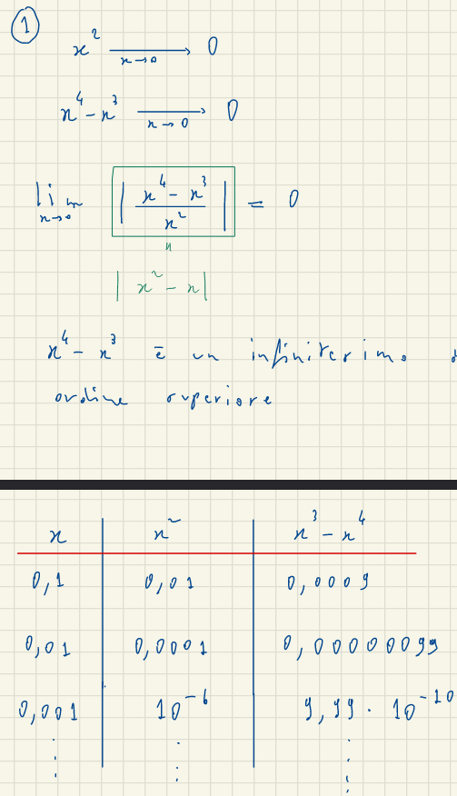 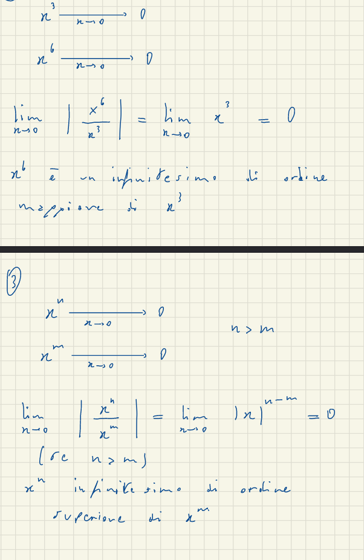
\(f,g: A \to \mathbb{R}, x_0 \in D(A)\)
\(f(x)\neq 0\) se \(A \backslash \{x_0\}\)
\(g(x) \to 0\)
Si dice che \(\nearrow\) è un o-picolo di \(f\) per \(x \to x_0\) se :
\(\displaystyle \lim_{x \to x_0} \frac{g(x)}{f(x)}=0\)
In tal caso si scrive: \(g(x)=o(f(x))\) per \(x \to x_0\)
esempi
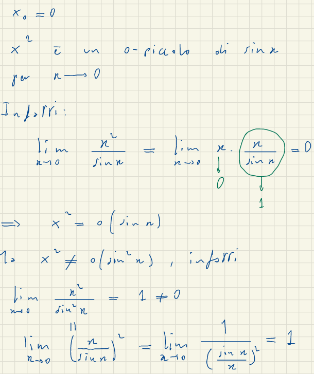
altri esempi dopo pag 11 pdfAttenzione \(x \to 0\) e \((n,m \in \mathbb{N})\)
\(f= o(x^n)\implies f=o(x^m), m<n\)
Dim
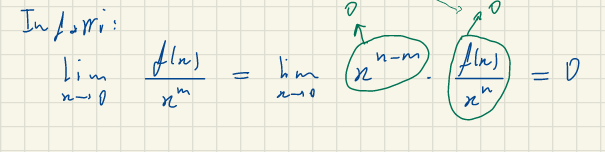
\(o(x^n)\pm o(x^n)\) è un \(o(x^n)\)
\(x^m\times o(x^n)\) è un \(o(x^{n+m})\)
\(o(x^n)\times o(x^m)\) è un \(o(x^{n+m})\)
\((o(x^n)^m)\) è un \(o(x^{n\times m})\)
\(o(o(x^n))\) è un \(o(x^n)\)
\(o(x^n+o(x^m))\) è un \(o(x^n), (m\ge n)\)
\(o(x^n+d\times x^{n+m})\) è un \(o(x^n)\)
\(\frac{o(x^n)}{x^m}\) è un \(o(x^{n-m})\) se \(m<n\)
\(o(k\times x^n)\) è un \(o(x^n)\)
se \(f,g\) sono infinitesime per \(x\to x_0\) allora \(o(f(x))=o(g(x))\)
se \(h(x)\xrightarrow{x\to 0}k\neq 0 \implies o(h(x)\times x^n)\) è un \(o(x^n)\)
\(f:]a,b[ \to \mathbb{R}, 0 \in ]a,b[\)
se \(f\) è continua in 0, e \(f\) è derivabile n-volte in \(\bar{x}=0\)
Si verifica che il polinomi di Taylor di \(f\) in \(\bar{x}=0\) di grado \(\le n\)
\(T_n(x)=\displaystyle{ \sum^{n}_{j=0} \frac{f^j(0)}{j!}x^j}\)
\(f(x)=T_n(x)+o(x^n)\)
\(f\) in \(\bar{x}\) di grado \(\le n\)
\(T_n(x)=\displaystyle{ \sum^{n}_{j=0} \frac{f^j(0)}{j!}(x-\bar{x})^j}\)
\(f(x)=T_n(x)+o((x-\bar{x})^n)\)
\(f:]a,b[ \to \mathbb{R}, 0 \in ]a,b[\)
se \(f\) è continua in 0
\(\displaystyle \lim_{x \rightarrow 0} f(x)= f(0)\)
quindi
\(\displaystyle \lim_{x \rightarrow 0} (f(x) -f(0)) =0\)
\(\implies f(x)=f(0)+o(1)\)
utilizzando la derivata
\(\displaystyle \lim_{x \rightarrow 0} \frac{f(x) -f(0)}{x} = f'(0)\)
\(\displaystyle \lim_{x \rightarrow 0} \frac{f(x) -f(0)}{x} -f'(0)=0\)
\(\displaystyle \lim_{x \rightarrow 0} \frac{f(x) -f(0)-f'(x)}{x} =0\)
Quindi sappiamo che
\(f(x) -f(0)-f'(x)=o(x)\)
quindi
\(f(x)= f(0) + f'(x)\times x + o(x)\) per \(x\to 0\)
quindi abbiamo trovato la retta tangente a x in 0
| funzione in zero | polinomio di taylor |
|---|---|
| \(e^t\) in \(t\to 0\) | \(T_n(t)=\displaystyle \sum^n_{j=0} \frac{1}{j!} t^j\) |
| \(\sin t\) in \(t\to 0\) | \(T_n(t)=\displaystyle \sum^n_{j=0} \frac{(-1)^j\times t^{2j+1}}{(2j+1)!}+o(t^{2n+1})\) |
| \(\cos t\) in \(t\to 0\) | \(T_n(t)=\displaystyle \sum^n_{j=0} \frac{(-1)^j\times t^{2j}}{(2j)!}+o(t^{2n})\) |
| \(\ln (t+1)\) in \(t\to 0\) | \(T_n(t)=\displaystyle \sum^n_{j=1} \frac{(-1)^{j-1}\times t^{j}}{j}+o(t^n)\) |
| \((t+1)^\alpha\) in \(t\to 0\) | \(T_n(t)=\displaystyle \sum^n_{j=0} \binom{\alpha}{j}\times t^{j}+o(t^n)\) |
punto 2
possiamo scrivere \(f(x)=\lambda \to \begin{cases}y=f(x) \\ y=\lambda \end{cases}\)
con \(\# S\) indichiamo il numero di soluzioni\(|a| = \begin{cases} a & \mbox{se} & a\ge 0 \\ -a & \mbox{se} & a <0\end{cases}\)
Chiamiamo monomio un’espressione letterata in cui compaiono soltanto moltiplicazioni fra numeri e potenze di lettere con numeri naturali come esponenti
Grado di lettera del monomio è il suo esponente
il Grado è la somma dei gradi delle lettere monomio che compare in esso
Due monomi sono simili se hanno la stessa parte letterale
Polinomio è una somma di monomi non tutti simili
generalizzato
\(a^n-b^n=(a-b)\displaystyle \sum^{n-1}_{k=0}a^{n-1-k}b^k \space \forall n \in \mathbb{Z}^+\)